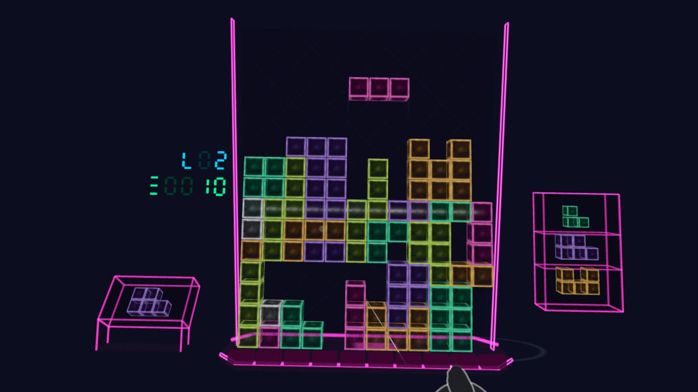
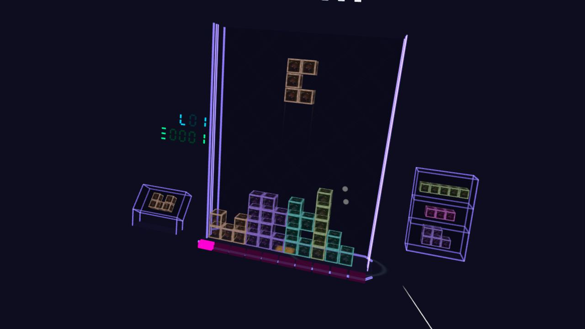

Wkrótce na Meta Quest 3 i 3S
Super Blocks AR
Spadające szklane bloki i twój prawdziwy pokój jako plansza. Postaw szyb na stole albo na podłodze, a jeśli wolisz, zagraj w neonowej arenie VR.
Twój pokój albo neonowa arena
Układaj spadające, świecące bloki w szybie o wymiarach 12 na 16 i czyść linie, żeby zdobywać punkty. Szyb postawisz na prawdziwym stole albo na podłodze (w trybie passthrough), a gdy wolisz, przeniesiesz grę do wirtualnej neonowej areny. Kiedy szyb się przepełni, po całym pokoju spadnie deszcz szklanych kostek.
Jak się gra
Wypełnij rząd szybu 12 na 16, a zniknie. Sześć elementów z jednej, trzech lub pięciu kostek. Każdy układa się inaczej.
Sześć elementów
- Iskrajedna kostka
- Igłatrzy kostki w linii
- Kątowniktrzy kostki w narożniku
- Kolumnapięć kostek w linii
- Mostpięć kostek w kształcie litery U
- Flagapięć kostek: blok 2x2 z jedną dodatkową
Trzy następne
Trzy następne elementy widzisz w szklanej rurze obok szybu.
Schowek
Jeden element chowasz w gablocie u podstawy szybu.
Cień lądowania
Poświata na dnie szybu pokazuje, gdzie wyląduje element.
Czyść więcej naraz, zdobywaj więcej
Kilka linii naraz daje wyższy wynik i nazwany bonus. Wynik mnoży się przez twój poziom.
- 1Pojedyncza linia
- 2DUET!
- 3TERCET!
- 4NEON!
- 5SUPERNOWA!
Własne tempo
Spokojny
Wolniejszy start i podpowiedź, która ci pomoże.
Normalny
Zaczynasz od początku i przyspieszasz z każdym poziomem.
Szybki
Start od wyższego poziomu.
Zen
Bez przegranej. Deszcz kostek uruchomisz, kiedy chcesz.
Co 10 linii awansujesz na nowy poziom, a bloki spadają szybciej.
Graj po swojemu
Ta sama gra w trzech miejscach. Przełączasz się między nimi z menu pauzy, bez przerywania rundy.
Stół (AR)
Gra na siedząco, szyb stoi na prawdziwym stole. Wybierasz powierzchnię, obracasz szyb i zmieniasz jego rozmiar, a gra zapamiętuje miejsce.
Podłoga (AR)
Odejdź kilka kroków i graj w skali pokoju. Po przegranej deszcz kostek spada przez twój prawdziwy pokój.
Neonowa arena (VR)
W pełni wirtualna scena ze szkła i neonów.
Kontrolery lub dłonie
W kontrolerach Touch drążek przesuwa, przyciski obracają, spust zrzuca element, a grip chowa go w schowku. Dłońmi: machnięcie kciukiem przesuwa, stuknięcie kciukiem obraca, a machnięcie kciukiem do przodu chowa element w schowku. Zrzucanie elementu nadal wymaga spustu kontrolera.
Komfort przede wszystkim
Zaprojektowana na sesje po 3 do 15 minut, na siedząco lub stojąco.
Bez poruszania się
Scena nigdy cię nie przenosi. Zostajesz tam, gdzie jesteś.
Gra na siedząco
Zaprojektowana tak, żeby można było grać na siedząco.
Ogranicz błyski
Możesz włączyć ograniczenie błysków. Nic w grze nie błyska częściej niż 3 razy na sekundę.
Wysoki kontrast i symbole
Wysoki kontrast i symbole na kostkach włączysz w opcjach dostępności.
Nic nie spada ci na głowę
Żaden element nie spada prosto na twoją głowę, a deszcz kostek omija strefę wokół niej.
Galeria
Prawdziwe ujęcia z gry. Grając, odblokujesz wiele szklanych skórek.




FAQ
Jakie gogle są obsługiwane?
Meta Quest 3 i Meta Quest 3S.
Czy potrzebuję konta?
Nie. Gra nie ma własnego konta, reklam ani analityki.
Czy gra korzysta z internetu?
Tylko do opcjonalnej tabeli wyników Meta. Gra nie ma własnego serwera. Po zakończonej rundzie (nie Zen) twój wynik i nazwa tablicy, czyli tylko poziom trudności, są wysyłane przez Meta Platform SDK wbudowany w grę. Gra nie łączy się z żadnym innym serwerem i nigdy nie wysyła skanu pokoju, obrazu z kamer ani danych dłoni.
Dokąd trafia skan mojego pokoju?
Nigdzie. W trybach AR gra odczytuje z gogli skan pokoju, aby ustawić szyb, a na podłodze także po to, by kostki odbijały się od pokoju. Skan jest przetwarzany na goglach i nigdy nie jest wysyłany ani zapisywany poza nimi. Gra zapamiętuje tylko wybraną pozycję planszy, jako kotwicę przestrzenną przechowywaną przez system na goglach.
Czy gra używa kamery?
Nie. Gra nigdy nie ma dostępu do obrazu z kamer i nie nagrywa obrazu ani dźwięku. Passthrough wyświetla system.
Czy śledzenie dłoni jest wymagane?
Nie. Śledzenie dłoni jest opcjonalne i odczytuje tylko gesty kciuka. Do wszystkiego wystarczą kontrolery.
Jakie języki?
Polski i angielski.
Kiedy premiera i ile kosztuje?
Wkrótce. Datę premiery i cenę podamy razem z wpisem w sklepie.
Wsparcie
Dane kontaktowe wsparcia pojawią się razem z wpisem w sklepie. Do tego czasu zajrzyj tu ponownie.